REAR DIFFERENTIAL CARRIER OIL SEAL > REPLACEMENT |
| 1. DRAIN DIFFERENTIAL OIL |
Stop the vehicle on a level place.
 |
for Front Differential:
Remove the engine under cover.
Using a 10 mm hexagon wrench, remove the filler plug and gasket.
Using a 10 mm hexagon wrench, remove the drain plug and gasket, and drain the oil.
Using a 10 mm hexagon wrench, install a new gasket and the drain plug.
for Rear Differential:
Remove the filler plug and gasket.
Remove the drain plug and gasket, and drain the oil.
Install a new gasket and the drain plug.
| 2. DISCONNECT PROPELLER SHAFT ASSEMBLY |
 |
Place matchmarks on the rear propeller shaft and companion flange.
Remove the 4 nuts, 4 washers and 4 bolts, and disconnect the propeller shaft from the differential side.
Support the propeller shaft securely.
| 3. REMOVE DRIVE PINION COMPANION FLANGE REAR NUT |
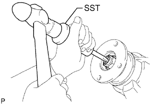 |
Using SST and a hammer, loosen the staked part of the nut.
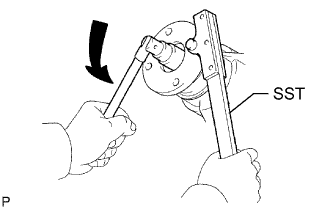 |
Using SST to hold the companion flange, remove the nut.
| 4. REMOVE REAR DRIVE PINION COMPANION FLANGE REAR SUB-ASSEMBLY |
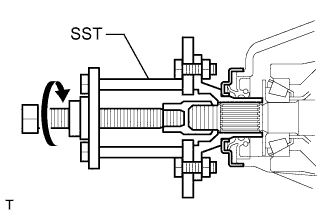 |
Using SST, remove the companion flange.
| 5. REMOVE REAR DIFFERENTIAL CARRIER OIL SEAL |
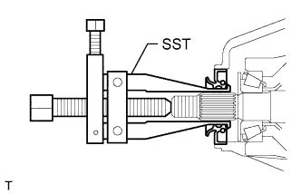 |
Using SST, remove the oil seal.
| 6. REMOVE REAR DIFFERENTIAL DRIVE PINION OIL SLINGER |
| 7. REMOVE REAR DRIVE PINION FRONT TAPERED ROLLER BEARING |
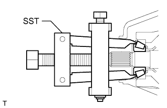 |
Using SST, remove the front bearing (inner race) from the drive pinion.
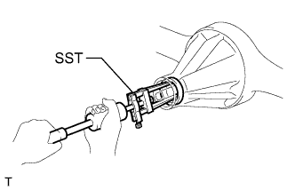 |
Using SST, remove the front bearing (outer race) from the drive pinion.
| 8. REPLACE REAR DIFFERENTIAL DRIVE PINION BEARING SPACER |
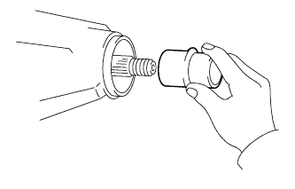 |
Replace the bearing spacer with a new one.
| 9. INSTALL REAR DRIVE PINION FRONT TAPERED ROLLER BEARING |
 |
Using SST and a hammer, tap in the bearing (outer race).
Install the bearing (inner race).
| 10. INSTALL REAR DIFFERENTIAL DRIVE PINION OIL SLINGER |
| 11. INSTALL REAR DIFFERENTIAL CARRIER OIL SEAL |
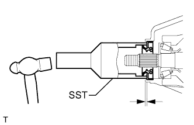 |
Using SST and a hammer, tap in a new oil seal.
Coat the lip of the oil seal with MP grease.
| 12. INSTALL REAR DRIVE PINION COMPANION FLANGE REAR SUB-ASSEMBLY |
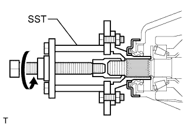 |
Using SST, install the companion flange to the drive pinion.
| 13. ADJUST DRIVE PINION PRELOAD |
Coat the threads of a new nut with hypoid gear oil.
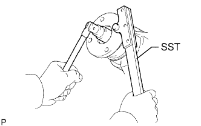 |
Using SST to hold the companion flange, install the nut by tightening it until the standard preload is reached.
 |
Using a torque wrench, measure the preload.
| Bearing | Specified Condition |
| New | 1.0 to 1.7 N*m (11 to 17 kgf*cm, 10 to 14 in.*lbf) |
| Reused | 0.9 to 1.4 N*m (9 to 13 kgf*cm, 8 to 12 in.*lbf) |
| 14. STAKE DRIVE PINION COMPANION FLANGE REAR NUT |
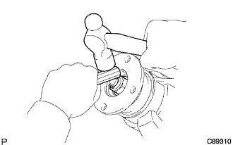 |
Using a chisel and hammer, stake the nut.
| 15. CONNECT PROPELLER SHAFT ASSEMBLY |
 |
Align the matchmarks on the propeller shaft flange and differential flange.
Connect the propeller shaft with the 4 bolts, 4 washers and 4 nuts.
| 16. ADD DIFFERENTIAL OIL |
 |
Add differential oil so that the oil level is between 0 to 5 mm (0 to 0.197 in.) from the bottom lip of the differential filler plug hole.
| Item | Oil Type and Viscosity |
| w/o LSD | Toyota Genuine Differential gear oil LT 75W-85 GL-5 or equivalent |
| w/ LSD | Toyota Genuine Differential gear oil LX 75W-85 GL-5 or equivalent |
| Item | Specified Condition |
| Standard | 4.15 to 4.25 liters (4.39 to 4.49 US qts., 3.66 to 3.74 Imp. qts.) |
| w/ LSD | 4.10 to 4.20 liters (4.34 to 4.43 US qts., 3.60 to 3.69 Imp. qts.) |
| w/ Differential lock |
for Front Differential:
Using a 10 mm hexagon wrench, install a new gasket and the filler plug.
Install the engine under cover.
for Rear Differential:
Install a new gasket and the filler plug.